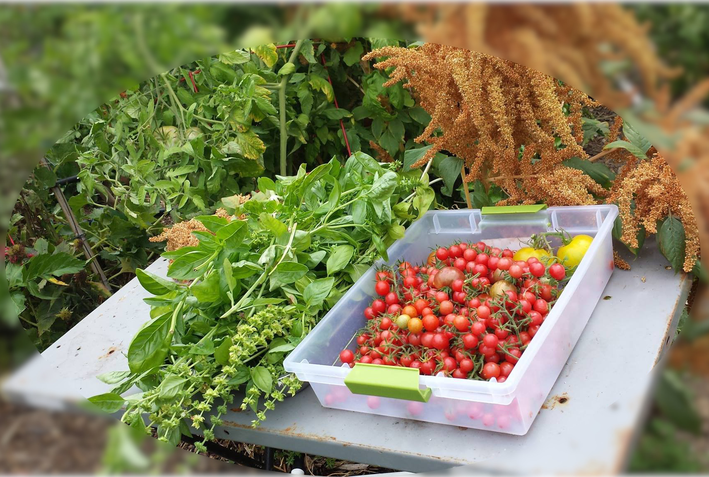
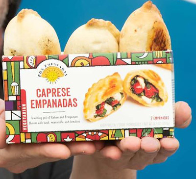
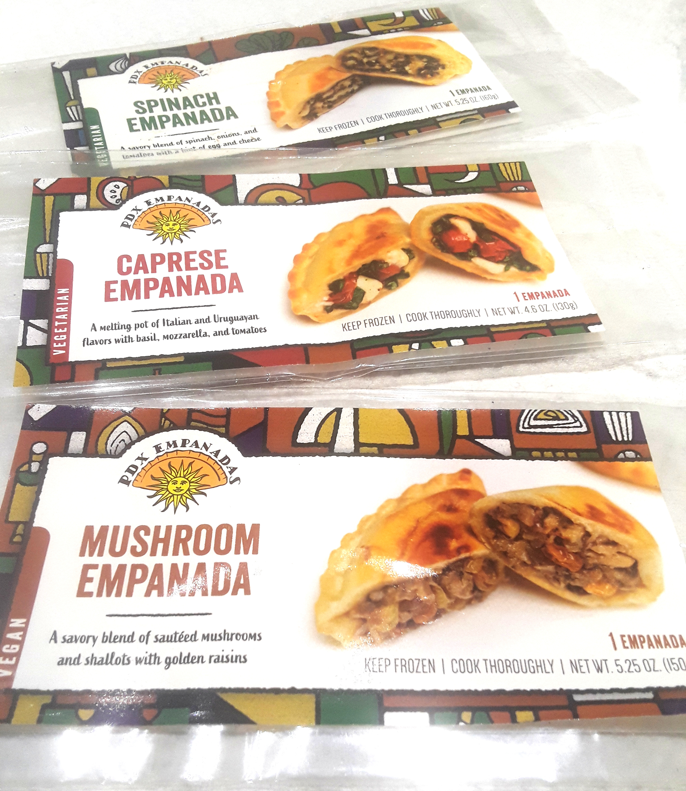

we are at Portland Saturday Market:
2 SW Naito Parkway, Portland, OR
Saturday: 10am to 5pm
Sunday:11am to 4:30pm
OUR STORY HOME

PDX Empanadas was born as Empanadas Revolucionarias in 2011 in Worcester, Massachussets as a way to nurture the community of friends and family in our small town. In 2013 grew up into the business PDX Empanadas when we moved to Portland, Oregon to be closer to our kids and their families. We started with a food cart in downtown and then moved to a permanent space at the Portland Saturday Market every Saturday and Sunday from March to December. In 2018 we were able to open a commercial kitchen with a lot more space than the food cart and we prepared it to offer frozen empanadas to grocery stores, cafes and restaurants.
PDX Empanadas is a family-owned and operated business with a passion for sustainable and healthy food. Our ingredients are organics as much as we can and come from local farmers and producers. We bake all our empanadas and try to offer vegan and vegetarian options all year..
We are able to offer frozen and baked empanadas now, thanks to the support of all our family and friends on the building of a commercial kitchen, please call 508-840-0044 to place an order.
MENU HOME
SAVORY
- 1. Pork - roasted pork shoulder, plums, dried cranberries, bell peppers, tomatoes, herbs.
- 4. Beef and cheese - organic ground beef, bell peppers, onions, mozzarella cheese, herbs.
- 6. Ham & Cheese - ham, eggs, parmesan & cheddar cheese.
- 7. Caprese (Vegetarian) - fresh tomatoes, mozzarella cheese, fresh basil.
- 8. Mushrooms (Vegan) - mushrooms, shallots, raisins, balsamic vinegar.
- 10. Spinach (Vegetarian) - spinach, garlic, feta & mozzarella cheese, onions, tomatoes.
- 16. Humita (Vegetarian) - onions, green & red bell peppers,corn kernel, parsley,mozzarella & parmesan cheese, herbs.
SWEET
- 15. Quince and goat cheese - Paste of locally grown quince fruit, goat cheese.
PACKAGES HOME
 You can find our boxes with two frozen empanadas at six of the New Seasons Market: Happy Valley, Lake Oswego, Tualatin, Beaverton, Hillsborough. Our frozen empanadas are sold individually at Food Fight Grocery: They are a vegan grocery store with two locations in Portland, You will find our vegan mushroom empanadas and hopefully more in the future, check them out !
People's Food co-op is selling our vegetarian and vegan frozen empanadas on individual packages. They are a supermarket co-op in South East Portland, check them out !
WHERE CAN YOU FIND US? HOME
Portland Saturday Market - Ready to eat empanadas, every Saturday and Sunday from March until Christmas eve at 2 SW Naito Parkway, Portland, OR.Food Fight Grocery Store - Our vegan frozen empanada sold in an individual package, every day at two stores located in 1217 SE Stark St. and 11155 NE Halsey St,both in Portland, OR.
New Seasons - Vegetarian and vegan frozen empanadas in a box of two, every day at their stores located in Lake Oswego, Happy Valley, Tualatin, Beaverton and Hillsboro.
 People's Food co op - Vegetarian and vegan frozen empanadas sold in an individual package, every day at their store located in: 3029 SE 21st Ave, Portland.
People's Food co op - Vegetarian and vegan frozen empanadas sold in an individual package, every day at their store located in: 3029 SE 21st Ave, Portland.
The Liquor store - Vegetarian and vegan empanadas ready to eat with their drinks, listening to fantastic music. They are located at: 3341 SE Belmont St, Portland.
WHAT IS THE WORLD SAYING ABOUT US? HOME
"Some of the best empanadas in the whole wild world." -- Our kids"After Getting Hit by a Truck, PDX Empanadas Food Cart Rebuilds" -- Eater
"Fantastic. Ran across this cart while wandering the Portland Saturday Market today, and very glad I did. Shared a couple of spinach and feta empanadas with my one-year-old daughter, who seemed to like them as much as I did." -- A customer